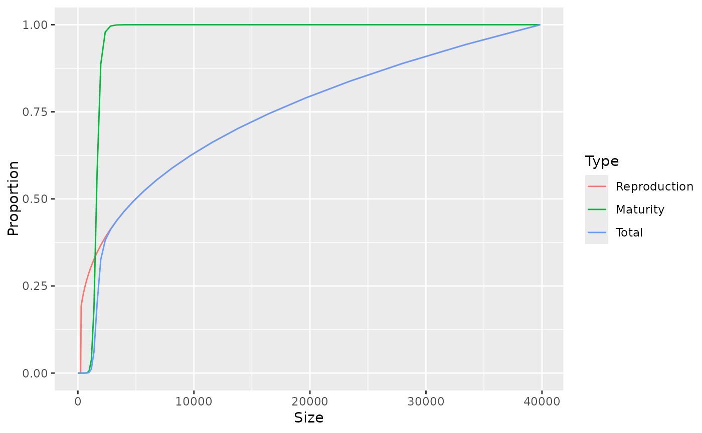

Sets the proportion of the total energy available for reproduction and growth that is invested into reproduction as a function of the size of the individual and sets additional density dependence.
Usage
setReproduction(
params,
maturity = NULL,
repro_prop = NULL,
reset = FALSE,
RDD = NULL,
...
)
getMaturityProportion(params)
maturity(params)
maturity(params) <- value
getReproductionProportion(params)
repro_prop(params)
repro_prop(params) <- valueArguments
- params
A MizerParams object
- maturity
Optional. An array (species x size) that holds the proportion of individuals of each species at size that are mature. If not supplied, a default is set as described in the section "Setting reproduction".
- repro_prop
Optional. An array (species x size) that holds the proportion of consumed energy that a mature individual allocates to reproduction for each species at size. If not supplied, a default is set as described in the section "Setting reproduction".
- reset
![[Experimental]](figures/lifecycle-experimental.svg) If set to TRUE, then both
If set to TRUE, then both maturityandrepro_propwill be reset to the value calculated from the species parameters, even if they were previously overwritten with custom values. If set to FALSE (default) then a recalculation from the species parameters will take place only if no custom values have been set.- RDD
The name of the function calculating the density-dependent reproduction rate from the density-independent rate. Defaults to "
BevertonHoltRDD()".- ...
Unused
- value
.
Value
setReproduction(): A MizerParams object with updated reproduction
parameters.
getMaturityProportion() or equivalently `maturity():
An array (species x size) that holds the proportion
of individuals of each species at size that are mature.
getReproductionProportion() or equivalently repro_prop():
An array (species x size) that holds the
proportion of consumed energy that a mature individual allocates to
reproduction for each species at size. For sizes where the maturity
proportion is zero, also the reproduction proportion is returned as zero.
Setting reproduction
For each species and at each size, the proportion \(\psi\) of the
available energy
that is invested into reproduction is the product of two factors: the
proportion maturity of individuals that are mature and the proportion
repro_prop of the energy available to a mature individual that is
invested into reproduction.
Maturity ogive
If the the proportion of individuals that are mature is not supplied via
the maturity argument , then it is set to a sigmoidal
maturity ogive that changes from 0 to 1 at around the maturity size:
$${\tt maturity}(w) = \left[1+\left(\frac{w}{w_{mat}}\right)^{-U}\right]^{-1}.$$
(To avoid clutter, we are not showing the species index in the equations,
although each species has its own maturity ogive.)
The maturity weights are taken from the w_mat column of the
species_params data frame. Any missing maturity weights are set to 1/4 of the
maximum weight in the w_max column.
The exponent \(U\) determines the steepness of the maturity ogive. By
default it is chosen as \(U = 10\), however this can be overridden by
including a column w_mat25 in the species parameter dataframe that
specifies the weight at which 25% of individuals are mature, which sets
\(U = \log(3) / \log(w_{mat} / w_{25}).\)
The sigmoidal function given above would strictly reach 1 only asymptotically.
Mizer instead sets the function equal to 1 already at the species'
maximum size, taken from the compulsory w_max column in the
species parameter data frame. Also, for computational simplicity, any
proportion smaller than 1e-8 is set to 0.
Investment into reproduction
If the the energy available to a mature individual that is
invested into reproduction is not supplied via the repro_prop argument,
it is set to the allometric form
$${\tt repro\_prop}(w) = \left(\frac{w}{w_{max}}\right)^{m-n}.$$
Here \(n\) is the scaling exponent of the energy income rate. Hence
the exponent \(m\) determines the scaling of the investment into
reproduction for mature individuals. By default it is chosen to be
\(m = 1\) so that the rate at which energy is invested into reproduction
scales linearly with the size. This default can be overridden by including a
column m in the species parameter dataframe. The maximum sizes
are taken from the compulsory w_max column in the species parameter
data frame.
The total proportion of energy invested into reproduction of an individual of size \(w\) is then $$\psi(w) = {\tt maturity}(w){\tt repro\_prop}(w)$$
Reproductive efficiency
The reproductive efficiency \(\epsilon\), i.e., the proportion of energy allocated to
reproduction that results in egg biomass, is set through the erepro
column in the species_params data frame. If that is not provided, the default
is set to 1 (which you will want to override). The offspring biomass divided
by the egg biomass gives the rate of egg production, returned by
getRDI():
$$R_{di} = \frac{\epsilon}{2 w_{min}} \int N(w) E_r(w) \psi(w) \, dw$$
Density dependence
The stock-recruitment relationship is an emergent phenomenon in mizer, with several sources of density dependence. Firstly, the amount of energy invested into reproduction depends on the energy income of the spawners, which is density-dependent due to competition for prey. Secondly, the proportion of larvae that grow up to recruitment size depends on the larval mortality, which depends on the density of predators, and on larval growth rate, which depends on density of prey.
Finally, to encode all the density dependence in the stock-recruitment
relationship that is not already included in the other two sources of density
dependence, mizer puts the the density-independent rate of egg production
through a density-dependence function. The result is returned by
getRDD(). The name of the density-dependence function is
specified by the RDD argument. The default is the Beverton-Holt
function BevertonHoltRDD(), which requires an R_max column
in the species_params data frame giving the maximum egg production rate. If
this column does not exist, it is initialised to Inf, leading to no
density-dependence. Other functions provided by mizer are
RickerRDD() and SheperdRDD() and you can easily use
these as models for writing your own functions.
See also
Other functions for setting parameters:
gear_params(),
setExtMort(),
setFishing(),
setInitialValues(),
setInteraction(),
setMaxIntakeRate(),
setMetabolicRate(),
setParams(),
setPredKernel(),
setSearchVolume(),
species_params()
Examples
# \donttest{
# Plot maturity and reproduction ogives for Cod in North Sea model
maturity <- getMaturityProportion(NS_params)["Cod", ]
repro_prop <- getReproductionProportion(NS_params)["Cod", ]
df <- data.frame(Size = w(NS_params),
Reproduction = repro_prop,
Maturity = maturity,
Total = maturity * repro_prop)
dff <- melt(df, id.vars = "Size",
variable.name = "Type",
value.name = "Proportion")
library(ggplot2)
ggplot(dff) + geom_line(aes(x = Size, y = Proportion, colour = Type))

# }